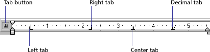
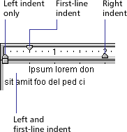

Using Director > Text > Editing and formatting text > Formatting paragraphs
Using Director > Text > Editing and formatting text > Formatting paragraphs |
Formatting paragraphs
You can specify the alignment, indentation, tabs, and spacing for each paragraph in a text cast member. The following procedure explains how to format paragraphs while you work in the Text window, but many of the same formatting options are available in the Text Inspector and the Paragraph dialog box.
To make formatting changes to a paragraph:
1 |
Double-click the text cast member in the Score to open the Text window. |
2 |
If the ruler is not visible, choose View > Ruler. |
To change the unit of measure on the text ruler, choose File > Preferences > General and select Inches, Centimeters, or Pixels from the Text Units pop-up menu. |
|
3 |
Place the insertion point in the paragraph you want to change, or select multiple paragraphs. |
4 |
To define tabs, use any of the following options: |
Set tabs by clicking the tab button until the type of tab you want appears. Then click the ruler to place the tab.
 |
|
Move a tab by dragging the tab marker on the ruler. |
|
Remove a tab by dragging the tab marker up or down off the ruler. |
|
5 |
To set margins, drag the indent markers on the ruler.
 |
6 |
To set line spacing, change the setting with the Line Spacing control.
|
Director adjusts line spacing to match the size of the text you are using. |
|
If you change the line spacing setting, Director stops making automatic adjustments. To resume automatic adjustments of spacing, enter 0 in the Line Spacing box. |
|
7 |
To set paragraph alignment, click one of the alignment buttons.
|
8 |
To change the kerning of selected characters, change the value of the Kerning option.
|
9 |
Set spacing before and after paragraphs by choosing Modify > Paragraph and using the Spacing Before and After options. |